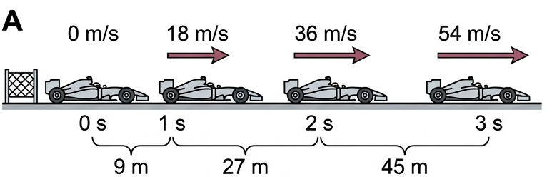
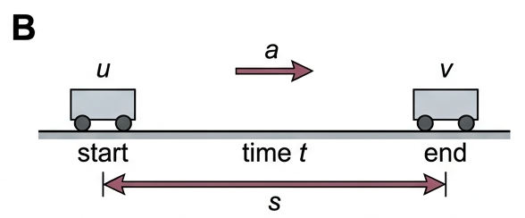
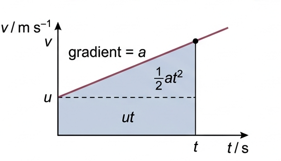
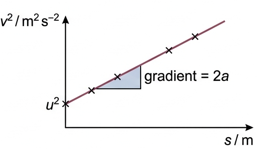
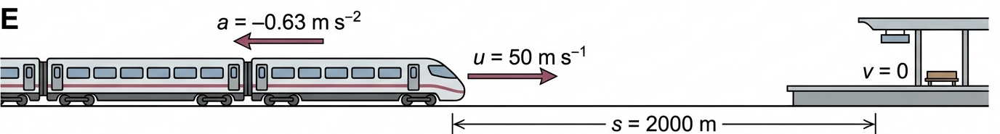

Four equations that let you predict where a uniformly accelerating object will be, and how fast it will be going, at any moment.
🎯 Hook – Zero to 54 in three seconds
A Formula One car leaves the starting grid from rest with an acceleration of 18 m s⁻². Three seconds later it is travelling at 54 m s⁻¹ — about 195 km h⁻¹ — and has covered 81 m of track. Nobody measured that distance with a tape: it was calculated from three numbers. Once acceleration is uniform, the whole motion is locked in.

Fig 1 — The car from rest: velocity arrows lengthen equally each second because the acceleration is constant, while the gaps travelled each second grow.
💡 Diagnostic question (think – then click) — In the first second the car travels 9 m. How far does it travel in the second second? Not 9 m — it travels 27 m. Equal increases in velocity produce unequal distances, because distance depends on \(t^2\).
📐 The five quantities and the four equations
The five quantities \(u\), \(v\), \(a\), \(s\) and \(t\) are all that is needed to fully describe the motion of an object that is moving with uniform acceleration. The equations of motion are the equations used to make calculations about objects moving with uniform acceleration.
Symbol
Meaning
Unit
\(u\)
velocity (speed) at the start of time \(t\)
m s⁻¹
\(v\)
velocity (speed) at the end of time \(t\)
m s⁻¹
\(a\)
acceleration (constant)
m s⁻²
\(s\)
displacement occurring in time \(t\)
m
\(t\)
time taken for velocity to change from \(u\) to \(v\) and to travel a distance \(s\)
s

Fig 2 — Every SUVAT problem is this one picture: a start velocity, an end velocity, and a constant acceleration acting over one interval of time and displacement.
Average velocity × time
$$s = \frac{(u+v)}{2}\,t$$
From the definition of acceleration
$$v = u + at$$
If any three of the quantities are known, the other two can be calculated using the first two equations. They come straight from definitions. Rearranging \(a = \dfrac{(v-u)}{t}\) gives \(v = u + at\). And since an object accelerating uniformly from \(u\) to \(v\) has average velocity \(\dfrac{(u+v)}{2}\), then distance = average velocity × time gives \(s = \dfrac{(u+v)}{2}t\).
These two equations can be combined mathematically to give two further equations. They contain no further physics theory — they express the same principles in a different way, arranged so you can avoid calculating a quantity you do not need.
💡 Choosing the equation — list what you know and what you want. The right equation is the one containing your four letters and missing the fifth. If \(t\) is not given and not wanted, reach for \(v^2 = u^2 + 2as\).
📈 Graphs every examiner uses
Graph type
Axes (X, Y)
Shape
What to read
Velocity–time
\(t\), \(v\)
Straight line, gradient \(a\), intercept \(u\)
Gradient = acceleration; area under line = displacement \(s\)
Gradient = \(2a\), so \(a = \tfrac{1}{2} \times\) gradient
Acceleration–time
\(t\), \(a\)
Horizontal line
Constant value confirms uniform acceleration; area = change in velocity

Fig 3 — The shaded trapezium is \(s\). Split as rectangle \(ut\) plus triangle \(\tfrac{1}{2}at^2\) and you have derived \(s = ut + \tfrac{1}{2}at^2\) from the graph alone.

Fig 4 — Linearised motion: plotting \(v^2\) against \(s\) gives a straight line of gradient \(2a\) and intercept \(u^2\). This is the standard way to measure \(a\) from data.
✓ Examiner tip: on a velocity–time graph the area below the axis counts as negative displacement. A body that returns to its start has equal areas above and below, so \(s = 0\) while the distance travelled is not.
✍️ Worked example – stopping a train at the station
A train travelling at 50 m s⁻¹ (180 km h⁻¹) needs to decelerate uniformly so that it stops at a station 2.0 kilometres away. Determine the necessary deceleration, and the time needed to stop the train.
1
Identify: uniform acceleration in a straight line, so SUVAT applies. Part (a) wants \(a\) from \(u\), \(v\) and \(s\) — no time involved, so use \(v^2 = u^2 + 2as\). Part (b) wants \(t\).
2
Data: \(u = 50\ \text{m s}^{-1}\), \(v = 0\) (it stops at the station), \(s = 2.0\ \text{km} = 2000\ \text{m}\). Convert to SI first — using 2.0 here instead of 2000 is the single most common error.
3
Equation: \(0^2 = 50^2 + (2 \times a \times 2000)\), so \(4000a = -2500\) and \(a = -0.63\ \text{m s}^{-2}\). Then \(v = u + at\) gives \(0 = 50 + (-0.63)t\).
4
Answer: \(a = -0.63\ \text{m s}^{-2}\) (a deceleration of 0.63 m s⁻², the minus sign meaning it opposes the motion) and \(t = 80\ \text{s}\). Alternatively \(s = \dfrac{(u+v)}{2}t\) gives \(2000 = 25t\), \(t = 80\ \text{s}\) — a useful independent check.

Fig 5 — Geometry for the worked example: motion is to the right, so the deceleration vector points to the left and \(a\) takes a negative value.
🔧 Real-world: runway length and take-off
An aircraft accelerating from rest at 2.40 m s⁻² must reach 86.0 m s⁻¹ to leave the ground. Rearranging \(v^2 = u^2 + 2as\) gives \(s = 1.54\ \text{km}\) — which is why airports building for larger aircraft must extend their runways rather than simply schedule more flights.
✓ Examiner tip: "assume uniform acceleration" is your licence to use SUVAT. If a question says the acceleration changes, you must work graphically or split the motion into uniform stages instead.
🚀 HL Extension – rotational analogues
Every linear equation has a rotational twin in Topic A.4: swap \(s \to \theta\), \(u \to \omega_i\), \(v \to \omega_f\), \(a \to \alpha\), and the algebra is identical, so \(\omega_f^2 = \omega_i^2 + 2\alpha\theta\). Challenge: a wheel at rest is given an angular acceleration of 3.0 rad s⁻² for 4.0 s. Through what angle does it turn? (Answer: \(\theta = \tfrac{1}{2}\alpha t^2 = 24\ \text{rad}\))
⚠️ Trap corner – common mistakes
Misconception
Correct view
SUVAT works for any motion
Only for uniform acceleration. Changing acceleration needs graphs or stage-by-stage treatment.
"Deceleration" means a positive value goes into the equation
If the motion direction is positive, a deceleration is a negative \(a\). Sign errors here flip the whole answer.
Average velocity is always \(\frac{(u+v)}{2}\)
Only when acceleration is uniform. Otherwise average velocity is total displacement ÷ total time.
\(s\) is the distance travelled
\(s\) is displacement. For motion that reverses, distance travelled exceeds \(|s|\).
Doubling the time doubles the distance from rest
From rest \(s \propto t^2\), so doubling \(t\) quadruples \(s\).
⚠️ Most common slip: leaving a distance in kilometres or a speed in km h⁻¹. Convert every quantity to metres and seconds before substituting — in the train example, using 2.0 instead of 2000 gives an acceleration 1000× too large and loses every mark in the chain.
v = u + ats = ½(u+v)ts = ut + ½at²v² = u² + 2asuniform a only3 knowns → 2 unknowns
Practice check — multiple choice
1. A car accelerates uniformly from rest at 4.0 m s⁻². How far has it travelled after 5.0 s?
A 20 m
B 40 m
C 50 m
D 100 m
2. An object is thrown upwards and returns to the thrower's hand. Over the whole flight, which statement is correct?
A Both the displacement and the distance travelled are zero
B The displacement is zero but the distance travelled is not
C The acceleration is zero at the highest point
D SUVAT cannot be applied because the direction reverses
3. A ball rolling down a slope passes P at 1.2 m s⁻¹ and, 1.4 s later, passes Q at 2.6 m s⁻¹. What is the distance PQ?
A 1.7 m
B 2.0 m
C 2.7 m
D 3.6 m
4. Experimental values of \(v^2\) are plotted against \(s\) for a uniformly accelerating trolley. The line has gradient 6.0 m s⁻² and vertical intercept 4.0 m² s⁻². What are the acceleration and initial velocity?
A \(a = 6.0\) m s⁻², \(u = 4.0\) m s⁻¹
B \(a = 3.0\) m s⁻², \(u = 2.0\) m s⁻¹
C \(a = 12\) m s⁻², \(u = 2.0\) m s⁻¹
D \(a = 3.0\) m s⁻², \(u = 4.0\) m s⁻¹
Practice check — fill in the blanks
Complete the statements:
The equations of motion apply only when the acceleration is . On a velocity–time graph, the gradient gives the and the area under the line gives the .
Exam‑style questions
Exam question · Calculate
A Formula One car accelerates from rest at 18 m s⁻². (a) Calculate its speed after 3.0 s. [2] (b) Calculate how far it travels in this time. [2] (c) If it continues to accelerate at the same rate, determine its velocity after it has travelled 200 m from the start. [2] [6 marks]
An aircraft accelerates uniformly from rest along a runway and takes off with a velocity of 86.0 m s⁻¹. Its acceleration during this time is 2.40 m s⁻². (a) Calculate the distance along the runway that the aircraft needs to travel before take-off. [2] (b) Predict how long after starting its acceleration the aircraft takes off. [2] [4 marks]
A cyclist travels at a constant 8.0 m s⁻¹ for 10 s, then decelerates uniformly to rest over the next 5.0 s. (a) Sketch the velocity–time graph for the 15 s of motion. [2] (b) Use the graph to determine the total distance travelled. [2] (c) Explain why the equation \(s = \frac{(u+v)}{2}t\) cannot be applied to the whole 15 s in a single step. [2] [6 marks]
✓ (a) Horizontal line at \(v = 8.0\) m s⁻¹ from \(t = 0\) to \(t = 10\) s ✓ then a straight line falling to zero at \(t = 15\) s. ✓ (b) Rectangle \(= 8.0 \times 10 = 80\ \text{m}\); triangle \(= \tfrac{1}{2} \times 5.0 \times 8.0 = 20\ \text{m}\) ✓ total \(= 100\ \text{m}\). ✓ (c) The acceleration is not uniform across the whole 15 s — it is zero for the first 10 s and negative for the last 5 s ✓ so the average velocity is not \(\frac{(u+v)}{2}\) and the motion must be split into two uniform stages.